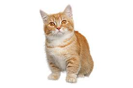
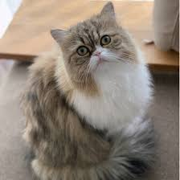
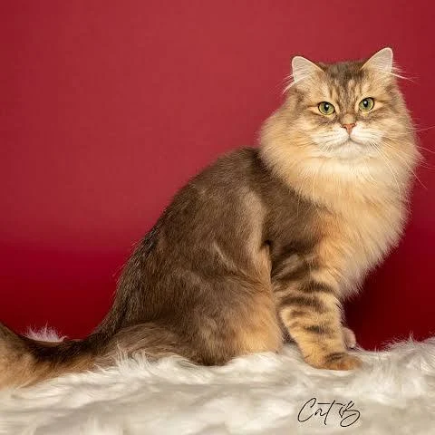
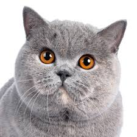
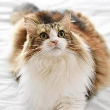
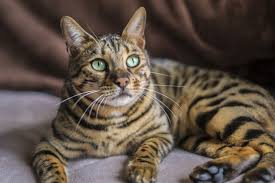
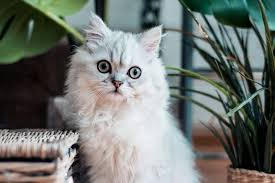
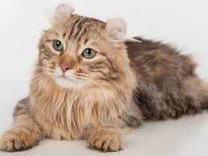
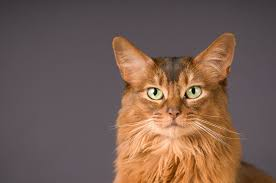
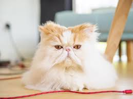

人気の猫ランキング TOP20
表をタップすると、対応する写真の位置まで自動で移動します。
| 順位 | 種類 |
|---|---|
| 1 | スコティッシュフォールド |
| 2 | ミックス |
| 3 | マンチカン |
| 4 | ラグドール |
| 5 | ミヌエット |
| 6 | サイベリアン |
| 7 | ブリティッシュショートヘア |
| 8 | アメリカンショートヘアー |
| 9 | ノルウェージャン |
| 10 | ラガマフィン |
| 順位 | 種類 |
|---|---|
| 11 | ベンガル |
| 12 | メインクーン |
| 13 | ロシアンブルー |
| 14 | エキゾチック |
| 15 | チンチラ |
| 16 | アメリカンカール |
| 17 | ペルシャ |
| 18 | ソマリ |
| 19 | エキゾチックロングヘアー |
| 20 | 日本猫 |
種類別説明
世界中で愛されている猫たちを、人気順に紹介します。
気になる猫をクリックすると、詳しい説明ページへ移動できます。
 1位 スコティッシュフォールド
1位 スコティッシュフォールド
 2位 ミックス
2位 ミックス

3位 マンチカン 4位 ラグドール
4位 ラグドール

5位 ミヌエット
6位 サイベリアン
7位 ブリティッシュショートヘア 8位 アメリカンショートヘアー
9位 ノルウェージャンフォレストキャット 10位 ラガマフィン
10位 ラガマフィン

11位 ベンガル 12位 メインクーン
12位 メインクーン
 13位 ロシアンブルー
13位 ロシアンブルー
 14位 エキゾチックショートヘア
14位 エキゾチックショートヘア

15位 チンチラ
16位 アメリカンカール 17位 ペルシャ
17位 ペルシャ

18位 ソマリ
19位 エキゾチックロングヘアー 20位 日本猫
20位 日本猫